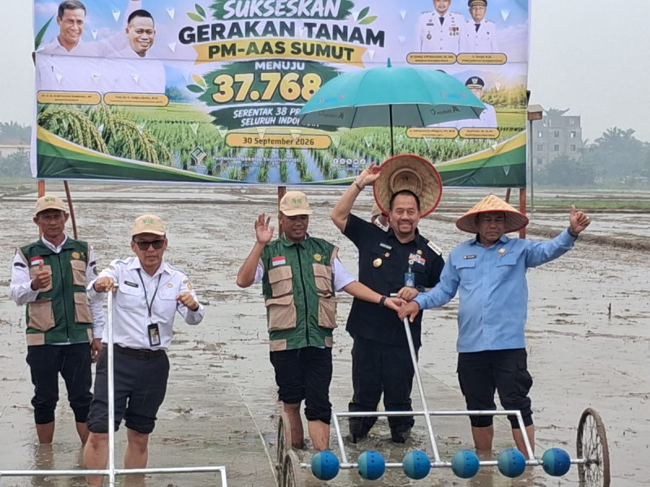
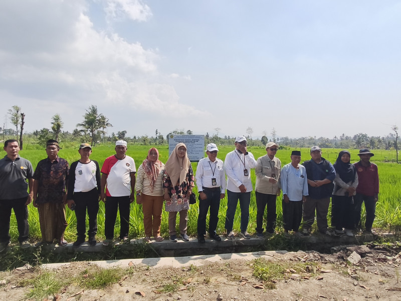

Tanaman pangan.
Data, teknologi, dan layanan.
Akses informasi pertanian, distribusi benih, dan layanan publik BRMP Tanaman Pangan.

Gerakan tanam padi PM-AAS
Dokumentasi dari BRMP Tanaman Pangan · 1 Oktober 2026
Memuat layanan…
Tidak ada layanan yang ditemukan.
Coba kata kunci lain atau tampilkan seluruh layanan.
Konten layanan dikelola oleh BRMP. Isi aplikasi eksternal mengikuti masing-masing penyedia.
Informasi & kegiatan BRMP.
Informasi kegiatan, layanan publik, dan dokumen BRMP Tanaman Pangan.
Mulai dari
kebutuhan Anda.
Tiga langkah untuk menemukan sumber informasi yang tepat.
Kembali ke direktori ↑- 01
Temukan layanan
Gunakan pencarian atau pilih kategori Data, Benih, Dokumen, dan Publik.
- 02
Periksa rincian akses
Baca deskripsi dan kebutuhan akses sebelum membuka layanan.
- 03
Buka sumber informasi
Lanjutkan ke situs penyedia. Simpan tautannya agar mudah ditemukan saat berkunjung kembali.
Hal yang perlu diketahui.
Apakah data di portal ini diperbarui otomatis?
Belum. Portal ini menyediakan direktori tautan. Untuk data terbaru, buka layanan sumber dan periksa periode serta tanggal pembaruan yang tercantum di sana.
Mengapa layanan meminta login atau izin akses?
Akses ditentukan oleh penyedia layanan. Gunakan akun yang telah diberikan oleh pengelola. Jika Google Drive meminta izin, ajukan akses melalui halaman sumber.
Di mana layanan tersimpan disimpan?
Daftar tersimpan berada di browser perangkat ini, tanpa akun portal. Daftar tidak tersinkron ke perangkat lain dan dapat hilang jika data browser dibersihkan. Tekan kembali tombol Simpan untuk menghapusnya.
Apa yang dilakukan jika tautan tidak dapat dibuka?
Periksa koneksi internet dan akses akun Anda. Jika masih gagal, hubungi pengelola layanan melalui kanal kontak yang tersedia di situs sumber.
Pusat Perakitan dan
Modernisasi Pertanian
Tanaman Pangan.
Direktori ini menyediakan akses ke layanan data, distribusi benih, informasi publik, serta dokumen pendukung BRMP Tanaman Pangan. Temukan informasi kegiatan dan kanal pelayanan melalui menu website ini.
Data layanan tersedia melalui masing-masing aplikasi terkait.

Temui kami di Bogor.
BRMP Tanaman Pangan
Jl. Merdeka No. 147, Kelurahan Menteng, Kecamatan Bogor Barat, Kota Bogor, Jawa Barat 16111Titik awal dipilih di Google Maps. Konfirmasikan layanan dan waktu kunjungan melalui kontak resmi.
Panduan & pengetahuan.
Informasi terbitan BRMP yang menjadi acuan asisten.